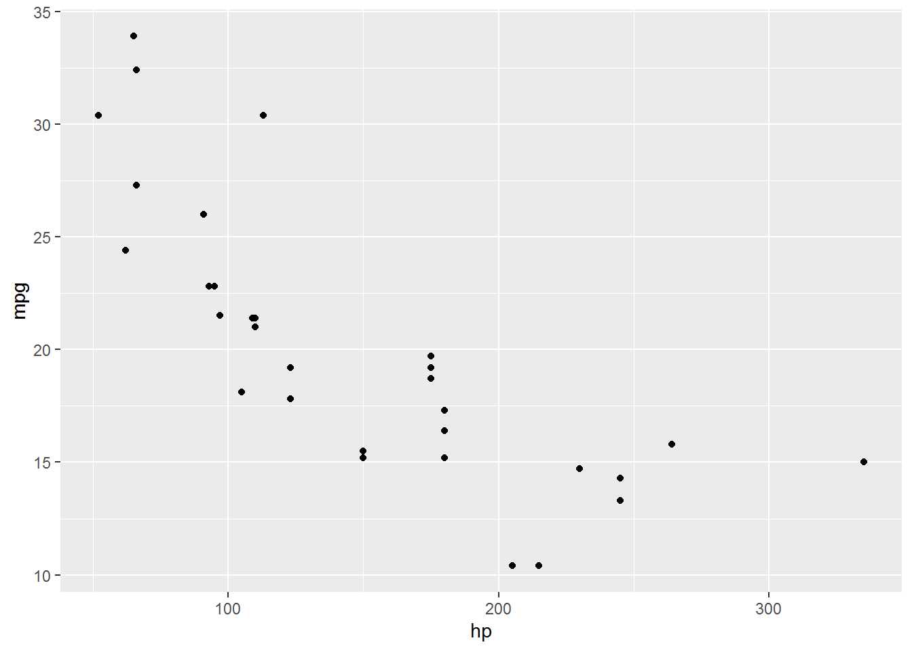

Chapitre 4 Analyses descriptives bivariées
Réaliser une analyse bivariée désigne le fait d’étudier la relation qui peut exister entre deux variables. Dans ce chapitre, nous allons voir les procédures graphiques et calculatoires qui permettent d’étudier et de quantifier le degré de relation pouvant exister entre deux variables dans les cas suivants : entre deux variables quantitatives, entre deux variables qualitatives, et entre une variable quantitative et une variable qualitative. Comme dans le chapitre précédent, l’objectif est ici d’explorer et de décrire les données et leurs relations à l’échelle d’un échantillon, sans pour autant chercher à déterminer l’incertitude qu’il peut exister dans les statistiques calculées en vue de les utiliser pour réaliser une inférence dans la population représentée.
4.1 Relation entre deux variables quantitatives
4.1.1 Etudier graphiquement la relation
Comme dans le cadre d’analyses univariées, une bonne pratique, lorsqu’on étudie une relation bivariée, est de faire un graphique. Avec des variables quantitatives, il s’agit de montrer les valeurs d’une variable en fonction des valeurs de l’autre variable, chose que permet un simple nuage de points. Plusieurs types de relations peuvent alors être rencontrés, ces relations pouvant potentiellement s’apparenter à autant de fonctions mathématiques que l’on connaît. Parmi les plus connues, on a par exemple les relations linéaires, les relations logarithmiques, ou encore les relations quadratiques, illustrées ci-dessous.

Dans R, pour obtenir un nuage de points à partir d’un jeu de données, il est possible d’utiliser la fonction ggplot() en l’associant à la fonction geom_point() du package ggplot2, comme dans l’exemple ci-dessous qui utilise le jeu de données mtcars (qui est intégré à R de base) et les variables hp (gross horsepower) et mpg (miles/US gallon). Dans cet exemple, on peut voir que la relation semble gobalement linéaire négative (voire curvilinéaire négative si l’on donne de l’importance au point isolé à droite du graphique).

4.1.2 Etudier numériquement la relation
Le coefficient de corrélation de Pearson
Lorsque la relation étudiée semble linéaire, l’étude numérique classique consiste à calculer le coefficient de corrélation de Pearson, noté \(r\), dont la valeur vise à renseigner dans quelle mesure le nuage de points représentant le lien entre les deux variables étudiées suit une droite. Avant de se lancer dans le calcul du coefficient de corrélation de Pearson pour étudier la relation entre une variable \(X\) et une variable \(Y\), il peut donc être utile de compléter le nuage de points montré ci-dessus avec une droite d’équation de type \(Y = aX + b\). Cette équation serait la meilleure modélisation possible de la relation linéaire entre \(X\) et \(Y\), de telle sorte que parmi l’infinité d’équations qui pourraient lier \(X\) à \(Y\), c’est cette équation qui au total donnerait la plus petite erreur lorsque l’on voudrait prédire \(Y\) à partir de \(X\). Si \(X\) et \(Y\) sont liées de manière linéaire, alors le nuage des points relatifs aux deux variables devrait s’étaler le long de cette droite. Pour obtenir cette droite en plus du nuage de points, il est possible d’utiliser la fonction geom_smooth() du package ggplot2.
ggplot(data = mtcars, aes(x = hp, y = mpg)) +
geom_point() +
geom_smooth(formula = y ~ x, method = "lm", se = FALSE)
Dans la fonction geom_smooth() qui a été utilisée dans l’exemple ci-dessus, on note que l’argument formula pourrait être considéré comme facultatif car il s’agit ici de la configuration par défaut de la fonction. En revanche, l’argument method doit être ici configuré avec "lm" (pour linear model) car ce n’est pas la méthode graphique configurée par défaut dans la fonction. Enfin, l’argument se permet de montrer ou non un intervalle de confiance autour de la droite de régression, ce qui n’a pas été activé ici (par défaut, l’argument se est configuré pour montrer cet intervalle de confiance). Dans l’exemple montré ci-dessus, la représentation graphique encourage fortement à penser que l’un des types de relations à envisager prioritairement dans l’étude des deux variables est la relation linéaire. Cette information rend pertinente l’utilisation du coefficient de corrélation de Pearson pour une étude numérique de la relation en question.
La valeur du coefficient de corrélation de Pearson peut aller de 1 (suggérant une relation linéaire positive parfaite) à -1 (suggérant une relation linéaire négative parfaite). Des valeurs proches de 0 suggèreraient une abscence de relation linéaire. La formule du coefficient de corrélation de Pearson (\(r\)) pour un échantillon est notée ci-dessous :
\[r_{X,Y} = {\frac{COV_{X,Y}}{s_{X} s_{Y}}} = {\frac{\sum_{i=1}^{N} (X{i} - \overline{X}) (Y{i} - \overline{Y})}{N-1}} {\frac{1}{s_{X} s_{Y}}},\]
\(COV\) désignant la covariance entre les variables \(X\) et \(Y\), \(X{i}\) et \(Y{i}\) les valeurs de \(X\) et \(Y\) pour une observation \(i\), \(\overline{X}\) et \(\overline{Y}\) les moyennes des variables \(X\) et \(Y\), \(N\) le nombre d’observations, et \(s_{X}\) et \(s_{Y}\) les écarts-types respectifs des variables \(X\) et \(Y\). Cette formule indique que le coefficient de corrélation de Pearson s’obtient en divisant la covariance des deux variables étudiées par le produit de leurs écarts-types respectifs.
Le tableau ci-dessous montre les premières étapes du calcul de la covariance pour des couples de variables fictifs \((X1,Y1)\), \((X1,Y2)\), et \((X1,Y3)\). En particulier, la partie droite du tableau (de X1Y1 à X1Y3) montre le calcul du produit \((X{i} - \overline{X}) (Y{i} - \overline{Y})\) pour les différents couples de variables et cela pour chaque ligne du jeu de données.
| X1 | Y1 | Y2 | Y3 | X1Y1 | X1Y2 | X1Y3 |
|---|---|---|---|---|---|---|
| 0 | 0 | 0 | 0 | 36 | 40.285714 | -36 |
| 2 | 2 | 1 | -2 | 16 | 22.857143 | -16 |
| 4 | 4 | 15 | -4 | 4 | -16.571429 | -4 |
| 6 | 6 | 5 | -6 | 0 | 0.000000 | 0 |
| 8 | 8 | 11 | -8 | 4 | 8.571429 | -4 |
| 10 | 10 | 3 | -10 | 16 | -14.857143 | -16 |
| 12 | 12 | 12 | -12 | 36 | 31.714286 | -36 |
Ce que ce tableau peut permettre de rendre compte, c’est que plus les deux variables étudiées évolueront de manière consistante dans des sens identiques comme avec \(X1\) et \(Y1\), ou de manière consistante dans des sens opposés comme avec \(X1\) et \(Y3\), plus les produits \((X{i} - \overline{X}) (Y{i} - \overline{Y})\) donneront respectivement des grands scores positifs ou des grands scores négatifs, et moins les scores \((X{i} - \overline{X}) (Y{i} - \overline{Y})\) à additionner pour le calcul de la covariance s’annuleront. En effet, avec une relation relativement linéaire et positive les scores seront plus systématiquement positifs, et avec une relation relativement linéaire et négative les scores seront plus systématiquement négatifs. Toutefois, lorsqu’on aura des variables qui n’évolueront pas de manière consistante dans le même sens ou dans un sens opposé comme avec \(X1\) et \(Y2\), les scores positifs et négatifs liés aux calculs \((X{i} - \overline{X}) (Y{i} - \overline{Y})\) auront tendance à s’annuler et donneront lieu à une somme des scores \((X{i} - \overline{X}) (Y{i} - \overline{Y})\) diminuée, et donc à une covariance et au final à un coefficient de corrélation de Pearson tirés vers 0. Ces différents cas de figure et les calculs \((X{i} - \overline{X}) (Y{i} - \overline{Y})\) correspondants sont illustrés sur la figure ci-dessous. Sur cette figure, chaque carré correspond au calcul \((X{i} - \overline{X}) (Y{i} - \overline{Y})\), le carré étant bleu lorsque le résultat du calcul est positif, et rouge lorsque le résultat est négatif. L’aire d’un carré illustre la grandeur du score issu du calcul. Sur les figures de gauche et de droite, on distingue une relation linéaire parfaite, ce qui maximise les scores à additionner pour le calcul de la covariance, dans le positif pour la figure de gauche et dans le négatif pour la figure de droite. Au milieu, on remarque que le manque de relation linéaire donne lieu à des carrés à la fois bleus et rouges, indiquant que les scores associés aux calculs \((X{i} - \overline{X}) (Y{i} - \overline{Y})\) de la covariance s’annulent et diminuent ainsi la valeur finale de la covariance.

Dans R, le coefficient de corrélation de Pearson peut être obtenu avec la fonction cor(). Dans l’exemple ci-dessous qui reprend les variables du jeu de données mtcars utilisées plus haut, on observe un coefficient négatif, relativement proche de -1, suggérant une relation relativement linéaire et négative entre les variables étudiées.
## [1] -0.7761684Toutefois, la fonction cor.test() sera plus intéressante pour la suite car elle permet de calculer des indices statistiques de probabilité qui seront nécessaires dès lors qu’il s’agira de chercher à inférer la valeur d’une corrélation dans une population d’où l’échantillon étudié provient. La valeur de la corrélation est donnée à la fin de la liste des informations qui apparaissent suite à l’activation de la fonction.
##
## Pearson's product-moment correlation
##
## data: mtcars$hp and mtcars$mpg
## t = -6.7424, df = 30, p-value = 1.788e-07
## alternative hypothesis: true correlation is not equal to 0
## 95 percent confidence interval:
## -0.8852686 -0.5860994
## sample estimates:
## cor
## -0.7761684Sur la base de travaux antérieurs, Hopkins et al. (2009) ont fait une proposition de classification pour qualifier la valeur du coefficient de corrélation qui serait obtenue dans le cadre d’une relation linéaire. Cette proposition est montrée ci-dessous :
| Petite | Moyenne | Grande | Très grande | Extrêmement grande |
|---|---|---|---|---|
| 0.1 | 0.3 | 0.5 | 0.7 | 0.9 |
Pour visualiser le lien que l’on peut faire entre la forme du nuage de points et la valeur du coefficient de corrélation de Pearson que l’on peut obtenir, la page web proposée par Kristoffer Magnusson (https://rpsychologist.com/correlation) peut être particulièrement intéressante. Cette page web donne la possibilité de faire varier manuellement la valeur du coefficient de corrélation de Pearson pour ensuite voir un nuage de points type correspondant à cette valeur. Faites un essai !
A noter que la valeur du coefficient de corrélation de Pearson est très dépendante de la manière dont sont distribuées les variables, avec une influence particulière de la variabilité des données (Halperin, 1986). L’influence de la variabilité est illustrée sur la figure ci-dessous. A gauche, on observe un nuage de points représentant une population complète, avec en conséquence une variablité le long des axes \(X\) et \(X\) relativement importante. La valeur du coefficient de corrélation de Pearson est ici particulièrement élevée. A droite, on observe exactement les mêmes valeurs, mais sur un intervalle dont l’étendue a été manuellement restreinte, diminuant ainsi la variabilité. On observe alors une diminution de la valeur du coefficient de corrélation de Pearson, alors qu’il s’agit à l’origine du même jeu de données que celui de gauche. Cet exemple doit faire prendre conscience qu’il faut faire attention lorsqu’on cherche à comparer des coefficient de corrélation de Pearson obtenus avec différents échantillons présentant des caractéristiques différentes, car si ces échantillons n’ont pas les mêmes niveaux de variabilité, les valeurs des coefficients de corrélation ne seront pas vraiment comparables, en sachant que c’est l’échantillon qui présente la plus grande variabilité qui aura mathématiquement plus de chances de présenter une valeur de coefficient de corrélation plus élevée.

Un exemple extrême de l’influence de la variabilité des données sur la valeur du coefficient de corrélation de Pearson est montré sur la figure ci-dessous. Les deux graphiques montrent exactement les mêmes données, à ceci près que sur le graphique de droite, on a remplacé en ordonnées une valeur du graphique de gauche pour lui donner la valeur de 10. L’influence de cette action sur la valeur du coefficient de corrélation est particulièrement nette, alors qu’une seule valeur a été modifée. Ceci montre qu’il faut faire attention aux valeurs extrêmes qui pourraient grandement influencer la valeur de corrélation obtenue, notamment en présence d’échantillons de taille relativement faible. Dans le cas où la valeur du coefficient de corrélation de Pearson serait très influencée par une valeur, il pourrait être une bonne pratique de calculer la valeur du coefficient de corrélation avec et sans cette valeur afin de pouvoir quantifier son influence sur la relation étudiée (Halperin, 1986). Une alternative pourrait être aussi d’étudier la relation à l’aide d’autres types de coefficients que celui de Pearson, tels que celui de Spearman, présenté plus bas. Toutes ces informations doivent en tous les cas faire prendre conscience qu’il n’est pas toujours pertinent de calculer le coefficient de corrélation de Pearson. En ce sens, lorsqu’on cherche à inférer la valeur du coefficient de corrélation de Pearson dans la population étudiée, et cela avec un degré d’incertitude bien défini, il convient de vérifier certains prérequis, lesquels seront abordés plus tard dans ce livre.

Lorsque la relation étudiée ne semble pas linéaire mais s’apparente assez clairement à d’autres fonctions mathématiques, telles que des relations logarithmiques ou polynomiales, il est possible de transformer une des variables, voire les deux, pour rendre la relation linéaire et à nouveau étudiable à l’aide du coefficient de corrélation de Pearson (Halperin, 1986). Toutefois, il est aussi possible de créer des modèles de régression non linéaires afin de regarder si ces modèles correspondent bien aux données. La détermination et la validation d’un modèle non linéaire qui correspondrait bien aux données confirmerait alors que la relation étudiée a une forme particulière et potentiellement prédictible. Les procédures pour explorer différents modèles de régression (linéaires et non linéaires) sont abordées au chapitre suivant. Enfin, une dernière alternative possible, pour étudier la relation entre deux variables quantitatives dont les distributions ne permettraient pas d’utiliser correctement le coefficient de corrélation de Pearson, serait l’utilisation de coefficients de corrélation basés sur les rangs, tels que le coefficient de corrélation de Spearman.
Le coefficient de corrélation de Spearman
Lorsque le coefficient de corrélation de Pearson ne permet pas de caractériser fiablement le degré de relation linéaire entre les valeurs de deux variables (par exemple en présence de valeurs aberrantes au sein d’un échantillon de petite taille), une alternative peut être d’étudier le degré de relation linéaire entre les rangs de ces deux variables. Le rang, c’est le classement (ou la position) d’une observation donnée en fonction de sa valeur. Dans une variable, les observations avec les valeurs les plus faibles seront associées aux rangs les plus bas alors que les observations avec les valeurs les plus élevées seront associées aux rangs les plus élevés. Une illustration de la notion de rang est proposée ci-dessous pour la variable hp du jeu de données mtcars. Dans le tableau ci-dessous, les lignes ont été ordonnées sur la base des rangs de la variable hp. On pourra remarquer que dans le tableau, nous avons ce qu’on appelle des ex-aequos, c’est-à-dire que plusieurs observations peuvent présenter les mêmes valeurs, et donc avoir le même rang.
| hp | hp_rank |
|---|---|
| 52 | 1.0 |
| 62 | 2.0 |
| 65 | 3.0 |
| 66 | 4.5 |
| 66 | 4.5 |
| 91 | 6.0 |
| 93 | 7.0 |
| 95 | 8.0 |
| 97 | 9.0 |
| 105 | 10.0 |
| 109 | 11.0 |
| 110 | 13.0 |
| 110 | 13.0 |
| 110 | 13.0 |
| 113 | 15.0 |
| 123 | 16.5 |
| 123 | 16.5 |
| 150 | 18.5 |
| 150 | 18.5 |
| 175 | 21.0 |
| 175 | 21.0 |
| 175 | 21.0 |
| 180 | 24.0 |
| 180 | 24.0 |
| 180 | 24.0 |
| 205 | 26.0 |
| 215 | 27.0 |
| 230 | 28.0 |
| 245 | 29.5 |
| 245 | 29.5 |
| 264 | 31.0 |
| 335 | 32.0 |
Le fait d’étudier l’existence d’une relation linéaire entre les rangs et non plus entre les valeurs de deux variables permet de s’affranchir de l’influence possible de valeurs très extrêmes, dans l’une et/ou l’autre variable, sur le calcul final de la corrélation. Pour déterminer alors la valeur de la corrélation, une manière de procéder est d’appliquer la méthode de calcul du coefficient de corrélation de Pearson en utilisant non plus les valeurs des variables, mais les rangs correspondants. Cette methode, c’est celle du calcul du coefficient de corrélation de Spearman (rho). Si l’on suit stricto sensu cette définition, nous pourrions alors utiliser le code suivant pour avoir le coefficient de corrélation de Spearman :
## [1] -0.8946646Toutefois, il existe une manière plus directe d’écrire les choses avec la fonction cor, qui contient un argument spécifiquement dédié au calcul du rho de Spearman :
## [1] -0.8946646La fonction cor.test permet aussi de calculer le coefficient de corrélation de Spearman en fournissant d’autres informations potentiellement intéressantes pour donner une idée de la significativité statistique de l’estimation de rho pour la population étudiée.
##
## Spearman's rank correlation rho
##
## data: mtcars$hp and mtcars$mpg
## S = 10337, p-value = 5.086e-12
## alternative hypothesis: true rho is not equal to 0
## sample estimates:
## rho
## -0.8946646Si l’on veut produire une représentation graphique qui illustre la valeur de rho obtenue, il pourrait être davantage pertinent de non plus montrer un nuage de points à partir des valeurs des variables mises en lien, mais un nuage de points à partir de leurs rangs respectifs.
mtcars %>%
mutate(hp_rank = rank(hp), mpg_rank = rank(mpg)) %>%
ggplot(aes(x = hp_rank, y = mpg_rank)) +
geom_point() +
geom_smooth(method = "lm", se = FALSE)
En matière d’interprétation, des valeurs de rho positives indiqueront que les deux variables mises en lien tendent à augmenter simultanément, on parlera alors de relation monotone positive. Dans le cas inverse, des valeurs négatives indiqueront que les deux variables mises en lien tendent à diminuer simultanément, on parlera alors de relation monotone négative. A noter cependant que de par son calcul, la valeur de rho ne permet pas de renseigner sur la forme de relation qu’il pourrait y avoir entre les valeurs des deux variables (e.g., linéaire ou curvilinéaire par exemple). Ceci est illustré sur la figure ci-dessous. La figure de gauche montre la relation entre les valeurs des variables \(X\) et \(Y\), qui est caractérisée par un coefficient de corrélation de Spearman (rho) de 1, indiquant donc que la relation est parfaitement monotone positive, sans préjuger de la forme particulière que pourrait présenter la relation. Pour mieux comprendre pourquoi cette valeur de rho est de 1, la figure de droite montre la relation entre les rangs de ces deux variables \(X\) et \(Y\). On voit en effet que la relation entre les rangs est effectivement parfaitement linéaire.

4.2 Relation entre deux variables qualitatives
4.2.1 Etudier graphiquement la relation
Plusieurs types de graphiques peuvent être envisagés lorsqu’il s’agit de montrer les données relatives au croisement de deux variables qualitatives. Une première approche consiste à utiliser des graphiques avec barres mises côte-à-côte et groupées sur l’axe horizontal en fonction des modalités d’une première variable, et colorées en fonction de la seconde variable. Cela est illustré sur la figure ci-dessous, qui a été réalisée à partir du jeu de données JointSports, lequel est utilisable après installation et chargement du package vcd. JointSports contient des données résumées avec des effectifs mis en lien avec les modalités de différentes variables qualitatives, comme on a pu l’obtenir avec les fonctions group_by et summarize dans les derniers exemples du chapitre précédent. (La différence qu’il y a ici avec ces précédents exemples est qu’ici, l’effectif est désigné par la variable Freq, alors qu’il s’agissait de la variable count auparavant.) Pour information, JointSports contient les données d’une enquête s’étant intéressée, en 1983 et 1985, aux opinions d’étudiants danois de 16 à 19 ans quant à la pratique sportive mixte. On note également que le code montré ci-dessous, qui a servi à générer les graphiques à suivre, utilise la fonction theme_hc() du package ggthemes afin de pouvoir utiliser des couleurs de remplissage automatique particulières. Le package ggthemes doit être installé puis chargé pour pouvoir être utilisé.
# Reconfiguration de l'ordre des modalités de la variable opinion, et calcul des effectifs totaux pour les catégories étudiées
JointSports_new <-
JointSports %>%
mutate(opinion = fct_relevel(opinion, "very bad", "bad", "indifferent", "good", "very good"),
gender = fct_relevel(gender, "Girl", "Boy")) %>%
group_by(gender, opinion) %>%
summarize(Freq = sum(Freq))
# Création des graphiques
g1 <-
ggplot(data = JointSports_new, aes(x = gender, y = Freq, fill = opinion)) +
geom_bar(stat = "identity", position = "dodge") +
scale_fill_brewer(palette = "Greens") +
theme_hc() +
theme(legend.position = "right") +
ggtitle("g1 : Mise en avant de la comparaison des opinions")
g2 <-
ggplot(data = JointSports_new, aes(x = opinion, y = Freq, fill = gender)) +
geom_bar(stat = "identity", position = "dodge") +
theme_hc() +
theme(legend.position = "right") +
ggtitle("g2 : Mise en avant de la comparaison des genres")
Pour pouvoir réaliser le graphique g1 montré ci-dessus, il a fallu indiquer dans la fonction ggplot(), grâce à x =, la variable dont on voulait voir les modalités en abscisses, et il a fallu renseigner pour les ordonnées, à l’aide de y =, la variable contenant les effectifs correspondants, le tout toujours à l’intérieur de l’argument aes() Etant donné que les données à montrer le long de l’axe des ordonnées sont explicitement indiquées avec Freq, il convient d’indiquer à l’intérieur de la fonction geom_bar() l’argument stat = "identity", ce qui contraint à determiner la hauteur des barres en fonction des valeurs de la variable Freq. A l’intérieur de la fonction ggplot() et de l’argument aes(), c’est l’argument fill = opinion qui a permis d’indiquer qu’on voulait des couleurs de remplissage différentes selon les modalités de la variable opinion. Enfin, c’est grâce à l’argument position = "dodge", à l’intérieur de la fonction geom_bar(), que l’on a pu obtenir des barres mises côte-à-côte, et non pas de manière empilée. Une logique similaire a été utilisée pour le graphique g2 en modifiant le code de telle sorte que la distinction de l’information avec des couleurs différentes se fasse avec la variable gender, et non plus opinion.
Les graphiques g1 et g2 montrent l’importance de la configuration du graphique en fonction des comparaisons que l’on veut principalement faire, et donc du message que l’on veut prioritairement délivrer. Un principe qui peut guider la conception du graphique est le fait qu’il est plus facile de comparer des barres qui sont mises juste côte-à-côte. Sur la base de ce principe, le graphique g1 ci-dessus permet de comparer plus facilement les diverses opinions relevées pour les garçons d’un côté et pour les filles de l’autre, alors que le graphique g2 permet de comparer plus facilement les réponses provenant des deux genres et cela pour chaque type d’opinion. Comme indiqué par Wilke (2018), les types graphiques illustrés avec les graphiques g1 et g2 ci-dessus peuvent parfois se voir attribuer le reproche que s’il est relativement facile de lire les informations encodées par des positions (cf. ligne de base sur les graphiques), il peut être être difficile de lire les informations encodées par une couleur dont la signification est indiquée en légende, car cela demande un effort mental supplémentaire de garder en tête la signification de la légende lorsqu’on lit le graphique. Pour palier ce problème, qui, selon Wilke (2018), est au final une affaire de goût, on pourrait utiliser la fonction facet_wrap() pour créer une figure telle qu’illustré ci-dessous. (La figure ci-dessous reprend la logique du graphique g1 montré plus haut, avec un besoin de légende qui n’existe plus car la fonction facet_wrap() a permis de montrer les diagrammes en barres pour les deux genres de manière séparée en mettant ces diagrammes dans des encarts différents.)
ggplot(data = JointSports_new, aes(x = opinion, y = Freq)) +
geom_bar(stat = "identity") +
facet_wrap(. ~ gender)
Dans certains cas, on peut vouloir comparer les effectifs relatifs aux modalités d’une première variable qualitative avec des barres mises côte-à-côte, et n’utiliser la seconde variable qualitative que pour avoir un peu d’éléments de contexte “à l’intérieur” des effectifs affichés pour la première variable qualitative. La figure ci-dessous illustre ce cas de figure où la hauteur des barres sert prioritairement à comparer les effectifs relatifs à diverses opinions, et la coloration des barres sert à fournir une idée de la répartition hommes / femmes dans les réponses, sans pourtant avoir l’ambition de comparer cette répartition hommes / femmes facilement d’un type d’opinion à un autre.
JointSports_new %>%
ggplot(aes(x = opinion, y = Freq, fill = gender)) +
geom_bar(stat = "identity") +
theme_hc() +
geom_text(aes(label = Freq), size = 3, position = position_stack(vjust = 0.5))
Les graphiques présentés dans cette sous-partie montrent des valeurs d’effectifs, mais selon l’objectif, il pourrait être aussi envisagé d’utiliser ces graphiques pour montrer des proportions. Cela dit, il existe d’autres visualisations possibles des proportions pour visualiser le lien entre deux variables qualitatives. Ces visualisations peuvent être consultées dans l’ouvrage en ligne de Wilke (2018).
4.2.2 Etudier numériquement la relation
Effectifs et proportions
Lorsqu’il s’agit de mener une étude numérique de la relation entre deux variables qualitatives, une première démarche à mettre en oeuvre est de récapituler numériquement les effectifs qui correspondent au croisement des deux variables. Pour cela, la fonction table() intégrée à R de base s’avère très pratique. Cependant, cette fonction requiert d’utiliser le jeu de données initial complet (i.e., avec toutes les observations), ce qui n’est pas le cas du jeu de données JointSports que nous avons utilisé juste précédemment, car ce dernier contient des effectifs déjà récapitulés par modalité de variables. Pour pouvoir illustrer le fonctionnement de la fonction table() avec les informations du jeu de données JointSports, j’ai donc crée un jeu de données complet qui, une fois résumé comme c’est le cas plus haut avec JointSports, donnerait les mêmes résultats. Ce nouveau jeu de données se nomme JointSports_full.
id <- rep(1 : sum(JointSports$Freq))
year <- c(rep("1983", 656), rep("1985", 615))
grade <- c(rep("1st", 350), rep("3rd", 306), rep("1st", 354), rep("3rd", 261))
gender <- c(rep("Boy", 134), rep("Girl", 216), rep("Boy", 115), rep("Girl", 191), rep("Boy", 157), rep("Girl", 197), rep("Boy", 104), rep("Girl", 157))
opinion <- c(
rep("very good", 31), rep("good", 51), rep("indifferent", 38), rep("bad", 10), rep("very bad", 4),
rep("very good", 103), rep("good", 67), rep("indifferent", 29), rep("bad", 15), rep("very bad", 2),
rep("very good", 23), rep("good", 39), rep("indifferent", 36), rep("bad", 15), rep("very bad", 2),
rep("very good", 61), rep("good", 72), rep("indifferent", 39), rep("bad", 16), rep("very bad", 3),
rep("very good", 41), rep("good", 67), rep("indifferent", 35), rep("bad", 12), rep("very bad", 2),
rep("very good", 77), rep("good", 80), rep("indifferent", 27), rep("bad", 10), rep("very bad", 3),
rep("very good", 31), rep("good", 31), rep("indifferent", 31), rep("bad", 4), rep("very bad", 7),
rep("very good", 52), rep("good", 70), rep("indifferent", 28), rep("bad", 4), rep("very bad", 3)
)
JointSports_full <-
data.frame(id = id, year = year, grade = grade, gender = gender, opinion = opinion) %>%
mutate(opinion = fct_relevel(opinion, "very bad", "bad", "indifferent", "good", "very good"))Une fois que l’on a un jeu de données complet sous la main, il est possible de créer ce qu’on appelle un tableau de contingence, c’est-à-dire ici un tableau qui récapitule numériquement les effectifs à la croisée des deux variables qui nous intéressent. Pour faire cela, on peut utiliser la fonction table() en suivant différentes méthodes montrées ci-dessous. (Le code montré ci-dessous aboutit aux mêmes informations que celles montrées sur le denier graphique ci-dessus.)
# 1ère méthode
tab <-
with(JointSports_full,
table(opinion, gender))
# 2ème méthode
tab <- table(JointSports_full$opinion, JointSports_full$gender)
# Visualisation du tableau de contingence
tab##
## Boy Girl
## very bad 15 11
## bad 41 45
## indifferent 140 123
## good 188 289
## very good 126 293Un tableau de contingence permet donc de comparer des effectifs en fonction de plusieurs modalités et variables à la fois. Le problème, lorsqu’on utilise des effectifs, est que certaines comparaisons peuvent être difficiles à faire lorsque les effectifs totaux liés aux différentes modalités ne sont pas comparables. Par exemple, dans le tableau montré ci-dessus, l’effectif total des filles est de 761 alors que celui des garçons est de 510, ce qui rend difficile la comparaison des garçons et des filles pour les différents types d’opinion recensés dans l’enquête danoise présentée plus haut. C’est pour cela qu’il convient, dans certains cas, de calculer les proportions correspondant à ces différents effectifs. Pour ce faire, on peut :
- Utiliser la fonction
prop.table(), qui va convertir en proportions les effectifs montrés plus haut en considérant l’effectif total de tout le tableau :
##
## Boy Girl
## very bad 1.18 0.87
## bad 3.23 3.54
## indifferent 11.01 9.68
## good 14.79 22.74
## very good 9.91 23.05- Utiliser la fonction
lprop()du packagequestionr, qui va convertir en proportions les effectifs montrés plus haut en considérant l’effectif total de chaque ligne du tableau :
##
## Boy Girl Total
## very bad 57.7 42.3 100.0
## bad 47.7 52.3 100.0
## indifferent 53.2 46.8 100.0
## good 39.4 60.6 100.0
## very good 30.1 69.9 100.0
## Ensemble 40.1 59.9 100.0- Utiliser la fonction
cprop()du packagequestionr, qui va convertir en proportions les effectifs montrés plus haut en considérant l’effectif total de chaque colonne du tableau :
##
## Boy Girl Ensemble
## very bad 2.9 1.4 2.0
## bad 8.0 5.9 6.8
## indifferent 27.5 16.2 20.7
## good 36.9 38.0 37.5
## very good 24.7 38.5 33.0
## Total 100.0 100.0 100.0Il convient bien de noter que les proportions données par ces différentes fonctions doivent être utilisées selon les comparaisons que l’on veut faire. L’analyse descriptive consiste alors à voir si, tant d’un point de vue graphique que numérique, on observe des différences de scores particulières entre les modalités d’une variable qualitative en fonction des modalités de l’autre variable qualitative. Si l’on considère le dernier tableau, on peut par exemple observer une très légère tendance à ce que les garçons soient davantage polarisés, par rapport aux filles, sur des opinions négatives vis-à-vis des pratiques sportives mixtes, alors que les filles seraient légèrement plus polarisées que les garçons sur des opinions positives, ce qui n’empêche pas que, pour les deux genres, il y a une polarisation principale sur des opinions neutres à positives.
Si l’on a évoqué l’idée que les proportions permettent de mieux comparer les choses, il convient de faire attention malgré tout à la manière dont l’effectif total associé à une modalité d’une variable se répartit selon les modalités de la seconde variable, car une répartition non homogène de l’effectif lié à une modalité d’une variable dans les différentes modalités de la seconde variable peut donner lieu à des conclusions tout à fait différentes selon que l’on considère une analyse globale ou une analyse par modalité. Un exemple connu pour illustrer le type de situations dans lesquelles il faut être vigilant est le cas du taux de réussite des femmes à l’université de Berkeley en 1973 qui était bien inférieur à celui des hommes lorsqu’on considérait les taux de réussite à l’échelle de l’ensemble de l’unversité (Bickel et al., 1975). Toutefois, une analyse par matière permettait de voir que les taux de réussite des femmes étaient très similaires à ceux des hommes dans la plupart des matières, voire étaient largement supérieurs à celui des hommes dans certaines matières. Cette situation, qui paraît de prime abord paradoxale, illustre pleinement ce qu’on appelle un paradoxe de Simpson (i.e., le fait que le résultat observé lors d’une analyse globale d’un groupe puisse se retrouver annulée voire inversée lors d’une analyse à l’échelle de sous-groupes). Dans le cas présent, le paradoxe s’explique par le fait que la majorité des femmes avaient candidaté dans des matières qui étaient très sélectives, c’est-à-dire où le taux de réussite était faible (il l’était aussi pour les hommes). Très peu de femmes avaient candidaté là où les taux de réussite étaient très élevés (pour les femmes comme pour les hommes). Donc au total, les hommes se retrouvaient avec un pourcentage de réussite global bien meilleur que celui des femmes, seulement parce que en proportions, plus d’hommes s’étaient engagés dans les matières où les taux de réussite étaient bien meilleurs.
4.3 Relation entre une variable quantitative et une variable qualitative
4.3.1 Etudier graphiquement la relation
Lorsque l’on cherche à explorer la relation qu’il peut y avoir entre une variable quantitative et une variable qualitative, il peut être intéressant de visualiser la distribution de la variable quantitative en fonction des modalités de la variable qualitative. Plusieurs possibilités existent afin de faire cela. On peut tout d’abord vouloir visualiser les choses de long de l’axe vertical avec :
- des moyennes et écarts-types, avec ou sans données individuelles (cf. codes et graphiques ci-dessous) ;
# Moyennes et barres d'erreur
g1 <-
ggplot(data = iris, aes(x = Species, y = Sepal.Length)) +
stat_summary(fun.data = "mean_sdl", fun.args = list(mult=1), geom = "errorbar", na.rm = TRUE, size = 1, width = 0.2, color = "red") +
stat_summary(fun = "mean", geom = "point", na.rm = TRUE, size = 5, color = "red") +
ggtitle("g1") +
theme(plot.title = element_text(size = 20),
axis.title = element_text(size = 17),
axis.text = element_text(size = 17))
# Moyennes, barres d'erreur, et points (l'installation du package Hmisc est nécessaire pour pouvoir utiliser "mean_sdl" ici)
g2 <-
ggplot(data = iris, aes(x = Species, y = Sepal.Length)) +
geom_point(size = 3) +
stat_summary(fun.data = "mean_sdl", fun.args = list(mult=1), geom = "errorbar", na.rm = TRUE, size = 1, width = 0.2, color = "red") +
stat_summary(fun = "mean", geom = "point", na.rm = TRUE, size = 5, color = "red") +
ggtitle("g2") +
theme(plot.title = element_text(size = 20),
axis.title = element_text(size = 17),
axis.text = element_text(size = 17))
# Moyennes, barres d'erreur, et points avec mouvement latéral aléatoire (l'installation du package Hmisc est nécessaire pour pouvoir utiliser "mean_sdl" ici)
g3 <-
ggplot(data = iris, aes(x = Species, y = Sepal.Length)) +
geom_jitter(width = 0.08, height = NULL, size = 3) +
stat_summary(fun.data = "mean_sdl", fun.args = list(mult=1), geom = "errorbar", na.rm = TRUE, size = 1, width = 0.2, color = "red") +
stat_summary(fun = "mean", geom = "point", na.rm = TRUE, size = 5, color = "red") +
ggtitle("g3") +
theme(plot.title = element_text(size = 20),
axis.title = element_text(size = 17),
axis.text = element_text(size = 17))
- des médianes et intervalles interquartiles, avec ou sans données individuelles (cf. codes et graphiques ci-dessous) ;
# Boîtes à moustaches
g4 <-
ggplot(data = iris, aes(x = Species, y = Sepal.Length)) +
geom_boxplot() +
ggtitle("g4") +
theme(plot.title = element_text(size = 20),
axis.title = element_text(size = 17),
axis.text = element_text(size = 17))
# Boîtes à moustaches et points
g5 <-
ggplot(data = iris, aes(x = Species, y = Sepal.Length)) +
geom_boxplot() +
geom_point(size = 3) +
ggtitle("g5") +
theme(plot.title = element_text(size = 20),
axis.title = element_text(size = 17),
axis.text = element_text(size = 17))
# Boîtes à moustaches et points avec mouvement latéral aléatoire
g6 <-
ggplot(data = iris, aes(x = Species, y = Sepal.Length)) +
geom_boxplot() +
geom_jitter(width = 0.08, height = NULL, size = 3) +
ggtitle("g6") +
theme(plot.title = element_text(size = 20),
axis.title = element_text(size = 17),
axis.text = element_text(size = 17))
- des aires de densité, avec ou sans données individuelles (cf. codes et graphiques ci-dessous).
# Aires de densité
g7 <-
ggplot(data = iris, aes(x = Species, y = Sepal.Length)) +
geom_violin() +
ggtitle("g7") +
theme(plot.title = element_text(size = 20),
axis.title = element_text(size = 17),
axis.text = element_text(size = 17))
# Aires de densité et points
g8 <-
ggplot(data = iris, aes(x = Species, y = Sepal.Length)) +
geom_violin() +
geom_point(size = 3) +
ggtitle("g8") +
theme(plot.title = element_text(size = 20),
axis.title = element_text(size = 17),
axis.text = element_text(size = 17))
# Aires de densité et points avec mouvement latéral aléatoire
g9 <-
ggplot(data = iris, aes(x = Species, y = Sepal.Length)) +
geom_violin() +
geom_jitter(width = 0.08, height = NULL, size = 3) +
ggtitle("g9") +
theme(plot.title = element_text(size = 20),
axis.title = element_text(size = 17),
axis.text = element_text(size = 17))
Les différentes lignes de graphiques montrés ci-avant montrent des graphiques de plus en plus efficaces à mesure que l’on se déplace de la gauche vers la droite. Une bonne pratique est en effet de donner la possibilité de visualiser les données individuelles en plus des statistiques que l’on souhaiterait montrer pour résumer la distribution. Il s’agit d’une bonne pratique car une même statistique peut en réalité cacher des distributions de valeurs très différentes. Ce principe a été illustré notamment par Weissgerber (2015) qui milite pour la disparition des graphiques en forme de bâtons de dynamite, lesquels sont souvent utilisés pour montrer des moyennes et écart-types. La raison est que ces graphiques en forme de bâtons de dynamite ne renseignent pas sur la forme exacte de la distribution, et donc limitent les possibilités du lecteur de juger de la pertinence des choix d’analyse qui seraient faits par la suite au regard des données d’origine.
Bien qu’on ait l’habitude d’utiliser des graphiques montrant les données de la variable quantitative sur l’axe vertical, il est possible de montrer les données sous formes d’aires de densité le long de l’axe horizontal (cf. graphique g13 ci-dessous) ou encore avec un graphique en lignes de crêtes (ridgelines plot, cf. graphique g14 ci-dessous). Ces types de graphiques et leurs intérêts ont été discutés par Wilke (2018). Pour pouvoir faire le graphque g14, il faut installer et charger un nouveau package : ggridges.

Lorsque les données à visualiser sont pairées, c’est-à-dire qu’il s’agit des mêmes individus qui ont des données pour chaque modalité de la variable qualitative (e.g., suite à une même mesure qui aurait été réalisée plusieurs fois), il est possible d’ajouter des éléments graphiques, telles que des lignes, de telle sorte à mettre davantage en évidence le fait que les données sont liées. Un exemple de graphique montrant cela est montré ci-dessous avec le jeu de données mice2 (intégré au package datarium). Ce jeu de données contient des données de poids de 10 souris évaluées avant et après un traitement.
mice2 %>%
pivot_longer(cols = c(before, after), names_to = "treatment", values_to = "score") %>%
ggplot(aes(x = treatment, y = score)) +
geom_line(aes(group = id)) +
geom_point(size = 3, shape = 21, fill = "white") +
stat_summary(aes(group = 1), fun = "mean", geom = "line", color = "red", size = 1.3) +
stat_summary(fun.data = "mean_sdl", fun.args = list(mult=1), geom = "errorbar", na.rm = TRUE, size = 1, width = 0.1, color = "red") +
stat_summary(fun = "mean", geom = "point", na.rm = TRUE, size = 4, color = "red") 
Dans le code ayant permi de réaliser ce graphique, il faut comprendre qu’il a été possible de réaliser des lignes reliant les différents points blancs grâce à la fonction geom_line() associée à un argument permettant de tracer les lignes en groupant les informations par individu (aes(group = id)). L’ajout d’une ligne rouge reliant chaque moyenne a été permis par l’écriture d’une ligne de code similaire à celle utilisée pour montrer les moyennes en rouge pour chaque condition, si ce n’est qu’on a indiqué de vouloir voir des lignes au lieu de points. La configuration de l’argument aes(group = 1) à l’intérieur de la fonction stat_summary() était nécessaire pour pouvoir montrer ces lignes rouges reliant les moyennes.
4.3.2 Etudier numériquement la relation
Différence des moyennes
Taille d’effet
Médianes des différences
Références
Bickel, P. J., Hammel, E. A., & O’Connell J, W. (1975). Sex bias in graduate admissions: data from berkeley. Science, 187(4175), 398–404. https://doi.org/10.1126/science.187.4175.398
Halperin, S. (1986). Spurious correlations–causes and cures. Psychoneuroendocrinology, 11(1), 3–13. https://doi.org/10.1016/0306-4530(86)90028-4
Hopkins, W. G., Marshall, S. W., Batterham, A. M., & Hanin, J. (2009). Progressive statistics for studies in sports medicine and exercise science. Med Sci Sports Exerc, 41(1), 3–13. https://doi.org/10.1249/MSS.0b013e31818cb278
Weissgerber, T. L., Milic, N. M., Winham, S. J., & Garovic, V. D. (2015). Beyond bar and line graphs: time for a new data presentation paradigm. PLoS Biol, 13(4), e1002128. https://doi.org/10.1371/journal.pbio.1002128
Wilke, C. O. (2018). Fundamentals of data visualization. O’Reilly Media, Inc. Retrieved from https://clauswilke.com/dataviz.